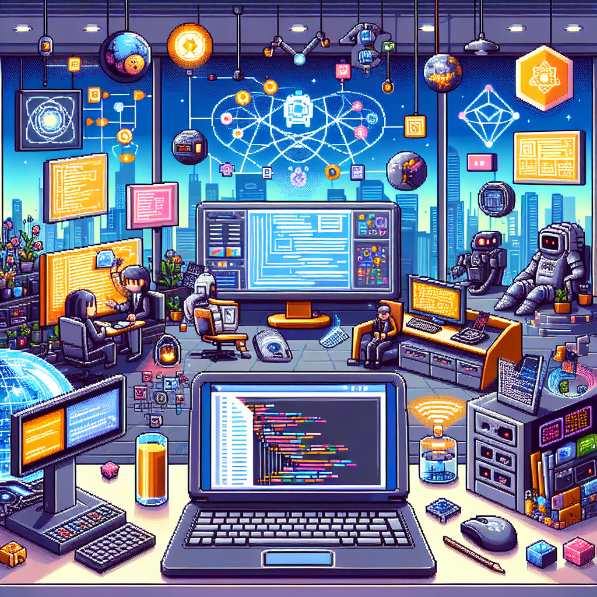

The future of Laravel
In today's rapidly evolving world of technology, web development is becoming increasingly important. As more businesses move their operations online, the demand for skilled web developers is at an all-time high. One of the most popular and widely used frameworks in web development is Laravel.
Laravel is a PHP framework that provides developers with an elegant and intuitive syntax, making it easy to build robust and scalable web applications. Over the years, Laravel has gained a strong following and has become the go-to choice for many developers.
But what does the future hold for Laravel? With the rise of cloud computing and platforms like Google Cloud Platform, there are exciting opportunities for Laravel developers to leverage these technologies and take their applications to the next level.
One of the key benefits of using cloud computing platforms like Google Cloud Platform (GCP) is the ability to easily scale your application. With Laravel and GCP, developers can take advantage of Kubernetes, a container orchestration system that allows for efficient scaling and management of applications. This means that as your user base grows, your application can seamlessly handle the increased traffic without any downtime.
In addition to scalability, Laravel developers can also benefit from the power of Vue.js, a progressive JavaScript framework for building user interfaces. Vue.js seamlessly integrates with Laravel, allowing developers to create interactive and dynamic user interfaces with ease. This combination of Laravel and Vue.js provides a powerful foundation for building modern web applications.
When it comes to front-end development, Laravel developers can also take advantage of popular CSS frameworks like Tailwind CSS. Tailwind CSS provides a utility-first approach to styling, allowing developers to quickly and easily design responsive and visually appealing interfaces. With Laravel's integration with Tailwind CSS, developers can streamline their front-end development process and create stunning user interfaces.
As we look to the future, it is clear that Laravel will continue to play a significant role in web development. With its robust features, seamless integration with popular technologies like Vue.js and Tailwind CSS, and the ability to leverage cloud computing platforms like Google Cloud Platform, Laravel is well-positioned to meet the ever-growing demands of the web development industry.
In conclusion, the future of Laravel looks bright. With its powerful features and integration with cutting-edge technologies, Laravel developers can continue to build innovative and scalable web applications. As the demand for web development continues to grow, Laravel will remain a valuable tool for developers looking to create high-quality and efficient web applications.